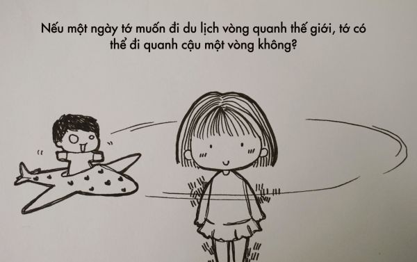
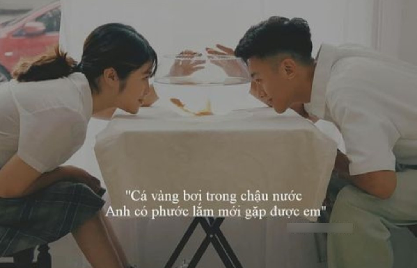
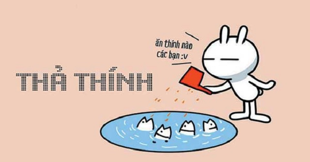
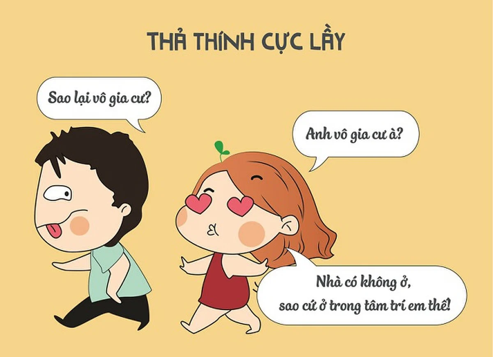
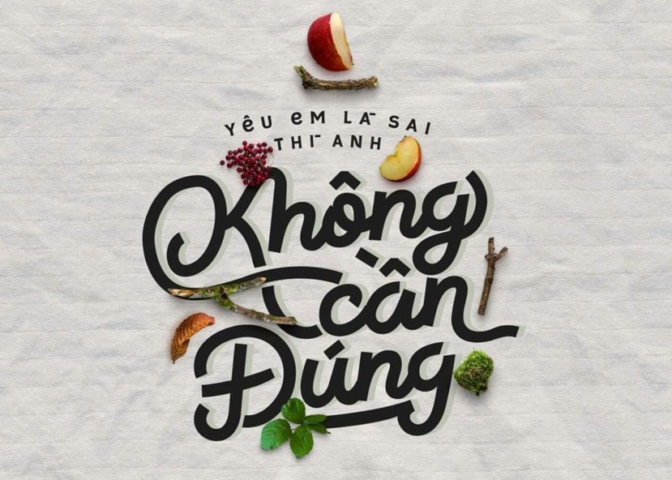
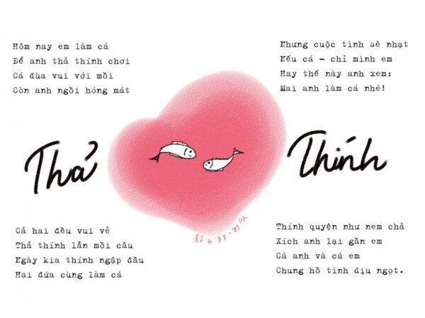
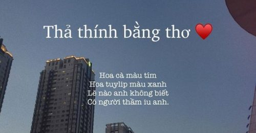

999+ STT, CAP, TUS thả thính ngắn siêu HAY, ngọt ngào, dễ thương

Ty Nguyen
CEO ❤️ AhaChat. Love babies & chatbot.Bạn đang “cảm nắng” hay đang rung động với một ai đó nhưng chưa biết cách làm thế nào để thu hút và gây ấn tượng với đối phương. Vậy thì còn chần chờ gì nữa mà không tham khảo 999+ STT, CAP, TUS thả thính ngắn siêu HAY, ngọt ngào, dễ thương ngay dưới đây để cưa đổ người trong mộng của mình. Chắc hẳn bạn sẽ chiếm được tình cảm của đối phương với những stt thả thính không quá mạnh mẽ, siêu dễ thương dưới đây.
Xem thêm:
- 9999+ câu STT hay, CAP - TUS hay bất hủ mọi thời đại được SHARE nhiều nhất
- 999+ STT buồn, CAP tâm trạng, TUS ngắn cực HAY mọi lứa tuổi
- Những câu nói hay về tình yêu: STT, CAP, TUS đủ thể loại buồn vui
- 999+ STT vui, CAP hài hước, thả thính vui nhộn về tình yêu, cuộc sống
- 999+ STT hay chất như quả đất, CAP ngầu về tình yêu & cuộc sống
- Những câu nói hay về tình bạn: STT, CAP, TUS buồn vui đủ thể loại
- 9999+ Tên nick Facebook hay, ngầu, đẹp, chất cho Nam & Nữ
- Full 1001+ Icon Facebook 2020 mới nhất & Các biểu biểu tượng FB HOT
STT thả thính dành cho con trai
Nếu bạn đang lỡ thầm thương trộm nhớ một người con gái nhưng chưa biết cách nào để bộc lộc, gây sự chú ý với crush thì có thể tham khảo những stt thả thính dưới đây. Chắc chắn nàng sẽ bồi hồi rung động trước những lời có cánh mà bạn dành cho nàng.

Cái gì đầy trong mắt em đó? Hình như là anh.
Số trời đã định, không phải lòng em, chắc chắn anh sẽ ế.
Em có thể đưa anh đến tiệm bánh được không? Vì anh cũng muốn có một chiếc bánh Cutie giống như em vậy
Ðiều duy nhất đôi mắt em chưa nói cho anh biết là tên của em.
Bão to, cây đổ. Sao em chưa đổ anh?
Anh ghét em lắm em biết không? Vì suốt ngày em cứ bay lượn trong đầu anh, làm anh không nghĩ được việc gì cả…huhu.
Nhà em có bán rượu không mà sao nói chuyện với em làm anh cứ chếnh choáng? Chàng trai này thật bá đạo. Một cách thả thính gây ấn tượng mạnh đấy.
Bố em có phải là tên trộm không? Sao có thể trộm vì sao và gắn vào mắt em như thế?
Em xinh đẹp ơi, làm con dâu mẹ anh không?
Đố em một con gấu bắc cực nặng bao nhiêu kg? (Thường thì các cô gái sẽ trả lời không) Đáp: Anh cũng không biết nhưng anh biết con gấu bắc cực đủ nặng để phá vỡ tảng băng giữa chúng ta.
Huhu….em ơi anh chết mất, sáng tới giờ anh cứ bị sếp la hoài thôi… Sếp bảo anh mà cứ nhớ em như thế này thì làm sao mà làm việc được cơ chứ. Phải làm sao em ơi!
Em có biết rằng anh nhớ em nhiều lắm không? Anh ăn không ngon nhưng ngủ như điên, anh đi giầy quên đi tất, ăn sáng quên đánh răng, anh dùng xăng vo gạo, anh khờ khạo cũng chỉ vì yêu em đó.
Hôm nay 14 tháng 3, mà sao chưa ai tặng quà anh nhỉ?
Em ơi! Em là nghề gì đấy….? Sao đêm nào em cũng hiện lên trong giấc mơ của anh vậy? Anh chẳng biết làm thế nào nữa cả. Làm người yêu anh em nhé!
Bố em có phải là một thợ kim hoàn không? Sao em giống viên kim cương vậy?
Giá có em người yêu để cùng khám phá thế giới.
Hãy để một lần cho anh được yêu em.
Em ạ ! Anh nhờ bưu điện gửi đến cho em 1 món quà . Đó là nỗi nhớ anh dành cho em lúc này . Nhưng thật tiếc , họ đã từ chối . Họ bảo nó quá lớn và không thể gửi được . Ừm, anh phải làm sao đây ?
Giờ nếu có cô gái nào nguyện bên anh, anh sẽ khiến cô ấy hạnh phúc mãi về sau
Này em ơi, mẹ anh đang gọi con dâu kìa.
Em này, sao hôm nay chẳng có thằng bạn dở hơi nào gọi điện cho anh thế nhỉ?.Chắc là nó biết anh đang nhớ em…nên sợ không dám gọi đấy mà….!!! Nhớ em nhiều !
Với thế giới thì em chỉ là một người. Còn với anh, em là cả thế giới.
Đông về tay anh lạnh lắm, nhưng anh vẫn sẵn lòng sưởi ấm tay em.
Anh muốn hỏi em một câu này,…thực ra đấy không phải là một câu hỏi. Anh chỉ muốn nói là… Nếu như mà em là CocaCola thì anh sẽ là Pepsi! (Nghĩa là chúng ta là một cặp đồ uống đẹp đôi)
Cho anh hỏi em một chút được không?…. Anh trông em rất là quen….Anh nghĩ là? Mình có biết nhau không?(Chém với gái lạ thì chắc chắn sẽ bảo không rồi)….Thế à. Trông em rất giống người yêu tương lai của anh. ?
Nếu mỗi lần nhớ tới em anh được 500 đồng chắc giờ này anh đã vượt xa Bill Gates.
1, 2, 3, 5 em có đánh rơi nhịp nào không?
Mây là của trời, em là của anh (tag tên chính chủ vào) Khẳng định chủ quyền rồi nhé. Nếu được tag tên mình vào thì từ nay cấm đi thả thính lung tung nhá.
Anh đã đợi chờ tình cảm của em! Anh biết rằng chẳng còn gì để anh hy vọng nữa nhưng em là cô bé anh sẽ yêu thương trọn đời. Ngày mai ta gặp nhau, anh biết nói thế nào đây. Anh yêu em! Tình yêu này anh sẽ giữ mãi trong lòng. Đợi chờ ư! Anh sẽ đợi.
Ngoài kia đám cưới linh đình. Bao giờ thì đến lượt mình em ơi.
Anh cá với em rằng em là tay trộm chuyên nghiệp. Bởi vì anh mới nhìn thấy em ở đây và trong nháy mắt là em đã đánh cắp trái tim của anh rồi.
Vận tốc trái tim nhanh không em nhỉ? Để anh tính quãng đường đi đến trái tim em..
Em cảm thấy như nào khi em là cô gái dễ thương nhất ở đây?(Đợi cô gái đỏ mặt hoặc thắc mắc tại sao anh lại hỏi như vậy). Đáp: Anh đứng ở đây khoảng 5 phút đợi bạn anh mà anh chưa thấy cô gái nào dễ thương như em đi qua đây.
Cuộc đời này chắc chắn không như ý anh muốn, vậy em sẽ như ý anh muốn.
Anh thà được một lần ngửi được mùi tóc thơm của em. Anh thà được mộ lần xiết chặt bàn tay của em, anh thà được một lần nếm hương vị ngọt từ nụ hôn của em còn hơn là sống bất tử mà không được điều ấy
Chỉ cần em yêu anh thôi, còn cả thế giới cứ để anh lo.
Em có muốn con mình sau này có ADN của anh không?
Anh như thế này, đã đủ tiêu chuẩn làm bạn trai em chưa?
Người ta chỉ mất có vài giây để nói lời yêu . Nhưng mất cả đời để chứng minh lời mình nói . Và anh tin rằng anh có thể chứng minh điều ấy.
Ngày đó trời mưa lớn lắm, anh gặp được em, em không thấy anh, anh không thấy mưa.
Anh có 1 ước mơ mà cần thêm một người thực hiện cùng. Và em là người anh cần. Em có thể giúp anh được ko? Anh ước anh và em mãi mãi bên nha
Anh là…. Còn em tên gì? (Em tên Quỳnh Anh) Quỳnh Anh Cái tên là là đẹp nhưng mà về sau anh sẽ không đặt tên con gái mình là Quỳnh Anh vì suốt ngày phải lên bảng
Em có muốn làm Mặt Trời duy nhất của anh không?
Mình cũng đẹp trai, sao chả ai để ý?
Tay anh đây ấm lắm, em muốn nắm thử không?
Anh cho phép em ở mãi trong trái tim anh đấy.
Em ơi ! Khi em đọc tin nhắn này, em nợ anh cuộc hẹn. Xóa tin nhắn này, em nợ anh cuộc tình. Lưu tin là em nợ anh 1 nụ hôn. Trả lời anh, em nợ anh tất cả. Còn nếu em không trả lời thì em đã yêu anh !!! hihi
Mọi người đều yêu cái đẹp, nên anh yêu em.
Có rất nhiều cách để hạnh phúc. Nhanh nhất chính là nhìn thấy em.
Cần lắm một em gái mưa!
Thế gian này đã dành không biết bao nhiêu giấy mực để viết về tình yêu. Còn anh, anh sẽ dành cả phần đời còn lại để yêu em để mang lại hạnh phúc cho em. Có được không em ???
Chán thả thính rồi, ai cưa đi để anh đổ thử một lần
Trong tim em có chỗ nào cho anh không?
TUS thả thính dành cho con gái

Trào lưu thả thính trai qua những câu được rất nhiều cô nàng ưa thích. Nhưng nếu mất hàng giờ đồng hồ nhưng vẫn chưa nghĩ ra được những tus thả thính crush thì đừng quá lo lắng. Những câu stt - tus thả thính dành cho con gái dưới đây sẽ giúp bạn dụ chàng dính thính.
Có phải cuộc sống quá bon chen nên anh mãi vẫn chưa tìm đến em?
Tim anh còn chỗ không? Em muốn chuyển nhà mà chưa tìm thấy chỗ.
Em sắp chuyển nhà rồi… Chuyển hộ khẩu vào trái tim anh!
Muối tan khi ngoáy lên trong nước còn em thấy anh là tự tan rồi…
Say rượu say bia làm gì? Anh say em đi này.
Em thả tim vào status mới nhất của anh, không phải cho hình hay caption đâu, là cho anh đó.
Tiết kiệm nước là chính sách quốc gia, thế nên anh đừng tắm một mình nữa.
Anh ơi, có nóng không? Tim em đang cháy nè.
Nắng đã có mũ, mưa đã có ô, còn em sẽ có ai?
Em nghĩ chúng mình có điểm chung đấy. Đó là anh yêu bản thân anh, còn em thì cũng yêu anh!
Uống nhầm 1 ánh mắt cơn say theo cả đời!
Cây đa, giếng nước sân đinh. Khi nào em hết một mình đây anh?
Chồng tương lai ơi, em chờ anh hơi lâu rồi đấy
Chán thả thính rồi, ai cưa để em đổ một lần coi.
Anh có yêu bản thân không? Vậy chúng ta tìm ra được điểm chung rồi, em cũng yêu anh!
Anh biết nhiều về Thuốc Mê không? Còn em gói gọn lại đó là anh
Trời đổ mưa rồi sao anh chưa đổ em?
Ai nào cho mượn avatar để em đỡ cô đơn đi
Thách ai nói yêu em đấy.
Dạo này anh có thấy mỏi chân? Sao cứ đi trong tim em mãi.
Kể cả trái đất này là không trọng lực, em vẫn cứ “đổ” vì anh!
Anh gì ơi ! Anh đánh rơi người yêu này.
Sao anh cười mãi thế. Da em đen mất rồi.
Em thích anh còn nhiều hơn muối ở biển…
Anh có thấy dạo này da em đen không? Vì mải nhìn nụ cười Toả Nắng của anh đấy.
Em không muốn ngủ muộn, chỉ là đang chờ ai đó chúc ngủ ngon thôi.
Bồ công anh bay khi có gió. Em chỉ cười vì ở đó có anh.
Câu tán tỉnh là em copy đó, nhưng tình cảm dành cho anh là thật lòng.
Anh có biết cài Win không ạ? Cài hộ em cái hệ điều hành nào mà có giao diện chính là Anh được không!
Lúc chưa hôn được anh, em cảm thấy ngay cả chó mèo xung quanh cũng là tình địch.
Anh biết sửa Tivi không. Sao kênh nào cũng chiếu toàn những nhung nhớ về anh thế này!
Anh ơi anh có hiểu rõ đường đi lối lại ở đây không. Chỉ hộ em xem đi đường nào để thoát khỏi nỗi nhớ anh cái!
Em đã xem hết “Mười vạn câu hỏi vì sao” những vẫn chẳng giải thích được vì sao em thích anh.
Cả thế giới này ai cũng yêu nhau chỉ có riêng mình em hẩm hiu một góc.
Tuổi tác với chị không quan trọng, vấn đề là em đã có bằng lái chưa?
Trước khi gặp được anh thì chẳng có ai, sau khi gặp anh thì không muốn có thêm ai nữa.
Xin lỗi anh gì ơi anh đi đứng kiểu gì thế ngã vào trái tim em rồi kìa!
Chỉ cần anh nói yêu, em sẽ bám theo anh suốt đời. Cô gái đang muốn muốn bật đèn xanh đấy. Cô nàng muốn gợi ý là mình chung thủy lắm đấy. Anh cứ thử tỏ tình mà xem.
Anh vô gia cư hay sao cứ ở trong đầu em mãi.
Anh gì ơi,cho em mượn đèn pin được không? Trời tối quá, em không tìm thấy đường vào tim anh.
Lâu rồi chưa biết cảm giác được đi ăn đi xem phim như thế nào, bài vở nhiều quá. Hôm nay rảnh có ai mời không nhỉ?
Nếu ngoài kia nhiều bão tố, thì về đây với em.
Bầu trời xanh, làn mây trắng. Anh yêu nắng hay yêu em?
Đường thì dài, chân em thì ngắn. Phải đi bao xa mới có thể tìm thấy anh.
Em ăn BƠ muốn vỡ bụng rồi đây ạ. Làng Face ai HẢO TÂM làm ơn cứu em với. 46. Chỉ cần cái status này 500 like, bụng em lại lành!
Ba mươi chưa phải là Tết. Không làm bạn đâu phải là hết, còn có thể làm người yêu mà.
Em đọc hết “Mười vạn câu hỏi vì sao” những vẫn không hiểu được vì sao em thích anh nhiều thế.
Anh có thể cho em mượn một nụ hôn được không? Em hứa là sẽ trả lại đầy đủ.
Này anh, anh xem hộ em xem trong mắt em có gì hộ cái. Thấy chưa, toàn là hình bóng anh đấy!
Nếu không có gì là mãi mãi, anh có thể là “không có gì” của em được không?
Anh yêu ơi ới ời. Anh đang ở đâu?
Điện thoại của em có vấn đề rồi. Nó không có số điện thoại của anh.
Em nên vui vẻ vì chúng ta là bạn bè, hay là nên buồn khi chúng ta chỉ là bạn bè?
Cần ai đó quan tâm để thấy mình được yêu thương.
Soái ca là của ngôn tình. Còn anh thì chỉ của mình em thôi.
Rảnh quá có ai muốn đi chơi với mình không …
Em có thể đi theo anh được không? Bởi vì em luôn được cha mẹ bảo là phải theo giấc mơ của mình.
Này anh gì ơi, anh có Anh hay Em Trai gì không? Em không tin là trên đời này có tận 2 thiên thần đâu!
Em xinh tươi, nhưng em chưa thuộc về ai.
Ai dám nói nơi hạnh phúc nhất là thiên đường. Người đó chắc hẳn không biết đến khoảnh khắc mỗi khi anh cười rồi!
Em độc thân. Anh độc thân. Chắc không phải là ngẫu nhiên đâu nhỉ?
Nhờ có nắng mới thấy cầu vồng. Nhờ có anh mới thấy màu hạnh phúc.
Nếu có thể hãy để em một lần được yêu anh, được không?
Trăng lên đỉnh núi trăng tà. Anh yêu em thật hay là yêu chơi?
Giữa cuộc đời hàng ngàn cám dỗ.Em chỉ cần bến đỗ anh thôi.
Ủa đêm rồi mà sao tim mình vẫn đầy nắng thế?
Anh hãy tốt với em một chút nữa đi, em không muốn thích người khác nữa đâu.
Mọi người cần ăn một ngày 3 bữa để tồn tại. Em thì chỉ cần nhìn thấy anh thôi.
Anh gì ơi cho em mượn cái đèn pin được không. Trời tối quá em không biết đường nào để đi đến trái tim anh.
CAP thả thính dành cho mọi đối tượng từ già trẻ lớn bé

Không cần phải đau đầu suy nghĩ Hôm nay đăng gì để thả thính đến các đối tượng mà mình đang để ý, chỉ cần lựa chọn 1 trong các cap thả thính dưới đây sẽ giúp 2 bạn đến gần nhau hơn :)
Tên cậu giống hệt tên 1 người mà đặt cạnh tên tớ ở…” “Ở đâu ?” – “Ở giấy đăng kí kết hôn”.
“Cậu giống như Google Chrome vậy”? – “Là sao?” – “Bởi cậu là tất cả những gì tớ tìm kiếm.”
“Tớ muốn gửi cậu một đề nghị cho cuộc sống.” “Gì cơ?”- “Ở bên tớ.”
Tớ không thích xem “Mười vạn câu hỏi vì sao” xíu nào cả. Trong đó chẳng giải thích được vì sao tớ thích cậu.
Tớ biết xem bói đó. Vừa nhìn là biết cậu ngũ hành thiếu tớ rồi.
Con người luôn luôn sẽ thay đổi. Lúc ban đầu tớ thích cậu, đến sau lại càng thích cậu hơn.
Câu tán tỉnh là tớ copy đó, nhưng tình cảm dành cho cậu là thật lòng.
Đừng nghĩ nhiều như thế, nghĩ đến tớ là được rồi.
Trời đổ mưa rồi sao anh chưa đổ em ?
Dạo này anh có thấy mỏi chân không ? Sao cứ đi trong đầu em mãi !
Anh vô gia cư hay sao cứ ở trong đầu em mãi?
“Hôm qua tớ gặp ác mộng đó.” “Mộng gì?” “Giấc mộng không có cậu trong đó.”
Trời lạnh lắm nhưng mà chắc chắn là anh không thấy lạnh vì anh đang ở trong trái tim em này.
Người khác đều sẽ đưa cậu hoa, đưa cậu quà, đưa cậu son môi. Tớ thì khác, tớ muốn đưa cậu về dinh.
Phải tiết kiệm nước, nên anh đừng tắm một mình nữa.
“Cậu có biết “my love” có nghĩa là gì không?” “Tình yêu của tôi?” “Là cậu.”
Cùng cậu chơi trốn tìm lúc nào tớ cũng thua. Cậu biết vì sao không? Bởi vì thích một người, trốn thế nào cũng không thoát.
“Ngủ chưa?” “Tớ định nhớ cậu một lần nữa rồi ngủ.”
Chứng nghiện thức đêm cùng nỗi nhớ em, anh đã cố nhưng sửa không được.
“Cậu cận thị à?” “Sao vậy?”, “Nếu không cận, thì sao cậu lại không nhìn ra tớ thích cậu chứ?”
“Có gì bay vào mắt tớ rồi này.” “Có gì đâu.” “Vớ vẩn, rõ ràng có bóng hình người tớ thích.”
“Cậu hoàn mỹ như vậy, nhưng lại có một thiếu sót.” “Gì cơ?” “Thiếu tớ.”
“Gậy sắt và gậy gỗ đập vào đầu cậu thì cái gì đau nhất?” “Đương nhiên là đầu đau nhất rồi.” – “Sai, tim tớ đau nhất.”
Trái tim đỏ mà tớ thả vào bài viết của cậu í, không phải cho hình hay cap mà cậu đăng đâu, là cho cậu đó.
Anh có biết tại sao da em đen không? Vì mải ngắm nụ cười tỏa nắng của anh đấy.
“Tớ muốn theo đuổi một chàng trai, cậu giúp tớ với nhé?” “Ai vậy?” “Chữ thứ 8 của câu trên.”
Cậu không phải kiểu người mà tớ thích. Nhưng cậu là người tớ thích.
Cậu cũng thích tớ quá đi chứ gì. Chỉ vì gặp tớ mà đêm nào cũng trộm bước vào giấc mơ của tớ.
“Cậu có biết điều tuyệt vời nhất trên thế giới là gì không”? – “Không?” – “Chữ đầu tiên của câu trên.”
Nếu cậu là protein histon thì tớ sẽ nguyện là ADN để quấn chặt lấy cậu.
STT thả thính crush hài hước, bá đạo

Có những cuộc gặp gỡ chớp nhoáng, chóng tàn,… Đường nhiều người như vậy em vẫn va phải anh.
Những đứa hay cười thường là chưa có ghệ.
Em vẫn xinh tươi, dễ thương mặc dù Ế.
Nếu có thể hãy để anh một lần yêu em, được không?
Cho anh hỏi chút. Bố em có phải làm nghề kim hoàn không?. Ông nội em có phải làm nghề kim hoàn không?…… Trông em đẹp như một viên kim cương vậy
Cả nguồn sống bỗng chốc thu bé lại vừa bằng một cô gái
Cứ một mình mãi nhưng mà cũng quen rồi (đăng kèm ảnh 1 cốc cafe, trà sữa or 1 đĩa thức ăn, 1 vé xem phim…)
Nếu có ai yêu, em sẽ ngừng thả thính.
Một mình mãi cũng quen thôi
Hai mình thì thích
Ba mình không nên"
Hình như tôi phiền lắm, đúng không?
Giá mà có người yêu cùng đi du lịch như thế này thì vui biết mấy.
Em sẽ cam tâm tình nguyện khờ dại nếu có ai đó đến bên em lúc này.
Thà rằng cô đơn vì không yêu ai cả. Chứ chẳng muốn bản thân yêu ai đó rồi mà vẫn thấy cô đơn!
Đang rãnh lém, có ai chịu đi chơi với em không nà!
Xinh đẹp, dịu dàng… mà vẫn Ế.
Đời này, em có hai lần tập đi khó nhất. Một là lúc nhỏ tập đi bước đầu tiên, hai là lúc chạy về phía anh.
Mess không một tin nhắn. Bản thân mình chẳng có ai quan tâm
Hôm nay bố mẹ em vắng nhà. Ai đến chở bé đi chơi đi.
Status này được 1000 like, anh nguyện cởi trần chạy vào nhà vệ sinh nữ.
Nếu giờ có ai đó INBOX để tâm sự thì thật tuyệt vời biết mấy.
Càng lớn tao càng xinh. Tụi mày đui à mà không yêu tao
Tao ế thì kệ tao, có giỏi thì làm người yêu tao đi
Yêu hay không yêu, không yêu hay yêu nói một lời thôi
Xin lỗi, có thể làm phiền em cười một cái không, cafe của anh đã quên thêm đường mất rồi.
Nhiều tiền quá mà không có thời gian để xài.
Thế giới có hàng vạn người nhưng em chỉ chờ đợi một mình anh thôi. Người đang giấu mặt.
Vì em là con gái nên rất ngại chủ động. Nên anh ơi.. nhắn tin cho em trước đi
Lâu rồi chưa biết cảm giác được đi ăn đi xem phim như thế nào, bài vở nhiều quá. Hôm nay rảnh có ai mời không nhỉ?
Giá như có ai ngồi ở đằng sau xe, ôm thật lâu và tựa đầu vào lưng của tôi.
Mới gọi lên nhà mạng hỏi mạng hôm nay MẠNG bị gì mà đăng status cả tiếng không có đứa nào LIKE.
Em vẫn xinh tươi, nhưng không thuộc về ai cả.. (các bạn nhớ đăng kèm bức ảnh xinh xắn dễ thương nhé).
Ế chết mẹ nè! Tán tao đi để đổ.
Chỉ cần anh nói yêu, em sẽ bám theo anh suốt đời.
Ai mà bị tớ nợ tiền thì like để tớ còn biết đường mà trả nợ nhé!
Ai cũng hạnh phúc trừ tôi!
Ớt dù cay vẫn ăn cả vỏ – Ngực em nhỏ anh có bỏ em không?
Nhiều khi muốn có 1 mối quan hệ mập mờ: –Không phải tình yêu– Không phải bồ bịch– Càng không phải người dưng.
Hay là mình cứ bất chấp hết yêu nhau đi anh
Làm gì có ai chọn một cây cỏ dại giữa một cánh đồng hoa?
Đến đôi dép còn có đôi, mà sao mình vẫn lẻ chiếc.
Em đã xem hết “Mười vạn câu hỏi vì sao” những vẫn chẳng giải thích được vì sao em thích anh
Rảnh quá có ai muốn đi chơi với mình không …
Phụ nữ đẹp nhất khi KHÔNG THUỘC về người đàn ông nào đúng không ạ?
Ai đoán đúng 2 số cuối cmnd của mình, Inbox làm quen nhé!
Tao cute thế này. Mà chưa có người yêu đâu nha.
Tao đang buồn đấy. Ai inbox an ủi tao đi
Em là cô gái mặc áo xám. Thích bu bám để được bên anh
Em là cô gái mang giày trắng. Ngược đời ngược nắng đi tìm anh
Rác còn có người hốt. Sao tao lại không có ai quan tâm.
Cô đơn quá rồi, có ai đồng ý làm người yêu mình hok?
Cả ngày chả có ai nhắn tin và cũng chẳng biết nhắn tin với ai
Vui một mình, buồn một mình, bệnh cũng một mình. Chỉ có mình em.
Em thả tim vào status mới nhất của anh, không phải cho hình hay caption đâu, là cho anh đó.
Chờ tin nhắn từ cậu, chắc hết mẹ cái thanh xuân.
Chán thả thính rồi, ai CƯA đi để em ĐỔ thử một lần
Cô đơn quá rồi. Cần lắm một vòng tay…
Bao giờ mới có người. Đem đồ ăn cho mình khi buồn.
Ai inbox nói chuyện cho đỡ buồn không nhỉ?
Một mình cô đơn lạc lõng trên phố đông, cần lắm một vòng tay!
Có ai nói với em là “anh yêu em thật nhiều” chưa?. Nếu chưa, thì ngay bây giờ anh đang nói đó.
Cả thế giới người ta có đôi có cặp, còn em hẩm hiu một mình một góc (đăng kèm bức ảnh ánh mắt nhìn xa xăm buồn)
Hôm nay Facebook chỉ có 1 like: ôi cả thế giới đang bỏ rơi mình.
Cách tốt nhất để giữ lời hứa là đừng hứa gì cả.
Dành cả thanh xuân để tìm kiếm người yêu, nhưng đến nay vẫn chưa tìm thấy!!!
Một mình em vẫn đẹp xinh.
Thứ anh cần là gì thế? Trong đó có em không?
Giá như có người đợi tôi đâu đó giữa cuộc đời, giá như có người đợi tôi mỗi tối.
Trang điểm thật đẹp, áo đầm thật xinh
Anh gì ơi, làm con rể mẹ em không?
Crush ơi! Ship cho tao 1 ít reallove đi
Mặt trời vừa lên hay là em mỉm cười với anh?
Inbox tới sáng với 1000 người chia sẻ stt này.
Muốn ly dị với “cô đơn”!
Có một câu chuyện mới vừa xảy với tớ rất kinh hoàng. Ai muốn nghe mình kể thì inbox hoặc comment cho mình nhé!
Ai like cho sự xinh đẹp của em đi ạ.
Mẹ tao tuyển con rể. Mày có đăng ký không?
Chân ngắn nhưng vẫn tươi tắn, phải hok anh?
12h khuya rồi, có ai inbox nói chuyện hem?
Lạnh rồi, muốn được ôm
Đông đã về… mà gấu còn ở Bắc Cực…
Gửi chồng tương lai, em đã chờ đợi anh gần 20 năm trời rồi, anh ở đâu xuất hiện đi em không muốn đợi chờ thêm nữa
Mình cũng đẹp trai đấy chứ nhỉ, vậy mà bao nhiêu năm rồi chưa một mảnh tình vắt vai là sao vậy?
Như thế này liệu đã đủ tiêu chuẩn để làm bạn trai em chưa? (đăng kèm bức hình phong độ đẹp zai nhé)
Gửi người yêu tương lai, anh đang ở đâu em chờ anh 20 xuân xanh rồi….
Người lạ ơi, xin hãy cho tôi mượn bờ vai…
Em tên là Chi. Em có một tình yêu rất chung thủy.
Shopee cái gì cũng có – Vậy sao không có bán người yêu vậy
Cần tin nhắn mỗi ngày, cần những hỏi han quan tâm từ ai đó để tôi biết mình đang được yêu thương.
Nếu tớ là nắng thì cậu có say nắng tớ không?
Phụ nữ xinh đẹp là khi không thuộc về ai.
Đôi lúc cần lắm một người. Quan tâm tôi thật sự
Giá như anh là gió, để đi đâu đó vờn mái tóc của em.
Muốn được ai đó gọi là “vợ yêu”
Nếu anh là cảnh sát giao thông thì anh sẽ cấm em đi ngoài đường, bởi vì em sẽ khiến cho các chàng trai xao nhãng và gây tai nạn.
Cuộc sống có em, bất luận là vui vẻ hay phiền muộn, từng chút từng chút một đều là dư vị hạnh phúc đầy ấm áp.
Hôm nay em vui, có ai lang thang với em không nào?
Ai ghét tớ thì cho 1 like thay cho 1 cục gạch nhớ. Nếu không cho có nghĩa là bạn đang yêu thầm tớ đấy….hehe ^_^
Cần lắm một người anh trai mưa!
Phía sau một cánh cửa sổ chính là chàng trai bốn mắt đang ngắm nhìn em.
Trời lạnh quá, nhà không có lò sưởi, cần lắm tấm chăn 37 độ.
Em hay GHEN với GIẬN vô cớ, liệu rằng anh chịu nổi em không?
Giá có em người yêu để cùng đi du lịch nhỉ?
Stt này được 999 share em sẽ công bố chồng tương lai.
Ngày xưa từng ước có người cõng mình đi như trong phim, vậy mà mà chờ mãi … còn chẳng kiếm ai để nắm tay cho đỡ lạnh.
Ốm một mình, đau cũng một mình. Em không thương em thì ai thương em đây?
Tớ muốn nói với cậu: Yêu là duyên phận, yêu là cảm động, yêu là thói quen, yêu là khoan dung, yêu là hi sinh, yêu là thông cảm, yêu là hứa hẹn cả đời.
Cần lắm một người, đặt mess hồng, chéo ảnh nổi bật và avatar, quan tâm đến nhau hàng ngày
Ê, ừ mày đó. Yêu tao không?
Chắc năm sau sẽ tìm được người yêu của 20 năm trước.
Xếp hàng chờ do đợi đã lâu – Chờ ly trà sữa, chờ câu ân tình
Tại sao em lại đến trái đất này để lòng anh xao xuyến.
Anh nào cho bé mượn hình để avatar cho bớt cô đơn đi ạ
Lúc chưa hôn được anh, em cảm thấy ngay cả chó mèo xung quanh cũng là tình địch.
Không biết cảm giác khi yêu một người sẽ như thế nào nhỉ?
Thích tao thì nói một tiếng, đừng có haha tus tao nhìu vậy nha
Mình chưa có người yêu nè… Mại dzô các bạn ơii
Bé giờ chưa biết socola ngày 14 tháng 2 nó đắng hay ngọt.
Lạnh rồi! Cần lắm một vòng tay.
Mình cũng đẹp trai con nhà giàu tử tế sáu múi, vậy mà bao nhiêu năm rồi chưa một mảnh tình vắt vai, có phải chăng ông trời quá bất công hay ganh tỵ với nhan sắc của anh?
Cậu là bến bờ, tớ là con thuyền. Cậu là mặt trời, tớ sẽ vì cậu mà chuyển động. Hạnh phúc là nhờ năng lực của cậu, khiến thế giới của tớ vĩnh viễn chẳng đổi thay.
Quotes thả thính tâm trạng, nghe là muốn đổ

Những quotes thả thính tâm trạng dưới đây đảm bảo đi vào lòng người, khiến đối phương nghe là muốn đổ.
Lạnh rồi, muốn được ôm
Dành cả thanh xuân để tìm kiếm người yêu, nhưng đến nay vẫn chưa tìm thấy!!!
Cậu là bến bờ, tớ là con thuyền. Cậu là mặt trời, tớ sẽ vì cậu mà chuyển động. Hạnh phúc là nhờ năng lực của cậu, khiến thế giới của tớ vĩnh viễn chẳng đổi thay.
Một mình cô đơn lạc lõng trên phố đông, cần lắm một vòng tay!
Vì em là con gái nên rất ngại chủ động. Nên anh ơi.. nhắn tin cho em trước đi
Nhiều khi muốn có 1 mối quan hệ mập mờ: –Không phải tình yêu– Không phải bồ bịch– Càng không phải người dưng.
Xếp hàng chờ do đợi đã lâu - Chờ ly trà sữa, chờ câu ân tình
Người lạ ơi, xin hãy cho tôi mượn bờ vai...
Bé giờ chưa biết socola ngày 14 tháng 2 nó đắng hay ngọt.
Cách tốt nhất để giữ lời hứa là đừng hứa gì cả.
Em vẫn xinh tươi, dễ thương mặc dù Ế.
Làm gì có ai chọn một cây cỏ dại giữa một cánh đồng hoa?
Chán thả thính rồi, ai CƯA đi để em ĐỔ thử một lần
Đời này, em có hai lần tập đi khó nhất. Một là lúc nhỏ tập đi bước đầu tiên, hai là lúc chạy về phía anh.
Cứ một mình mãi nhưng mà cũng quen rồi (đăng kèm ảnh 1 cốc cafe, trà sữa or 1 đĩa thức ăn, 1 vé xem phim...)
Càng lớn tao càng xinh. Tụi mày đui à mà không yêu tao
Em thả tim vào status mới nhất của anh, không phải cho hình hay caption đâu, là cho anh đó.
Cô đơn quá rồi. Cần lắm một vòng tay…
Em đã xem hết “Mười vạn câu hỏi vì sao” những vẫn chẳng giải thích được vì sao em thích anh
Xinh đẹp, dịu dàng... mà vẫn Ế.
Nếu có thể hãy để anh một lần yêu em, được không?
Trời lạnh quá, nhà không có lò sưởi, cần lắm tấm chăn 37 độ.
Ai like cho sự xinh đẹp của em đi ạ.
Cần tin nhắn mỗi ngày, cần những hỏi han quan tâm từ ai đó để tôi biết mình đang được yêu thương.
Hay là mình cứ bất chấp hết yêu nhau đi anh
Mẹ tao tuyển con rể. Mày có đăng ký không?
Ai ghét tớ thì cho 1 like thay cho 1 cục gạch nhớ. Nếu không cho có nghĩa là bạn đang yêu thầm tớ đấy….
Mình cũng đẹp trai con nhà giàu tử tế sáu múi, vậy mà bao nhiêu năm rồi chưa một mảnh tình vắt vai, có phải chăng ông trời quá bất công hay ganh tỵ với nhan sắc của anh?
Cần lắm một người, đặt mess hồng, chéo ảnh nổi bật và avatar, quan tâm đến nhau hàng ngày
Mess không một tin nhắn. Bản thân mình chẳng có ai quan tâm :(
Chờ tin nhắn từ cậu, chắc hết mẹ cái thanh xuân.
Đôi lúc cần lắm một người. Quan tâm tôi thật sự
Lúc chưa hôn được anh, em cảm thấy ngay cả chó mèo xung quanh cũng là tình địch.
Cả ngày chả có ai nhắn tin và cũng chẳng biết nhắn tin với ai
Cho anh hỏi chút. Bố em có phải làm nghề kim hoàn không?. Ông nội em có phải làm nghề kim hoàn không?…… Trông em đẹp như một viên kim cương vậy
Chân ngắn nhưng vẫn tươi tắn, phải hok anh?
Nếu tớ là nắng thì cậu có say nắng tớ không?
Anh gì ơi, làm con rể mẹ em không?
Tớ muốn nói với cậu: Yêu là duyên phận, yêu là cảm động, yêu là thói quen, yêu là khoan dung, yêu là hi sinh, yêu là thông cảm, yêu là hứa hẹn cả đời.
Giá có em người yêu để cùng đi du lịch nhỉ?
Không biết cảm giác khi yêu một người sẽ như thế nào nhỉ?
Đông đã về... mà gấu còn ở Bắc Cực...
Ai mà bị tớ nợ tiền thì like để tớ còn biết đường mà trả nợ nhé!
Em hay GHEN với GIẬN vô cớ, liệu rằng anh chịu nổi em không?
Nếu giờ có ai đó INBOX để tâm sự thì thật tuyệt vời biết mấy.
Cuộc sống có em, bất luận là vui vẻ hay phiền muộn, từng chút từng chút một đều là dư vị hạnh phúc đầy ấm áp.
Anh nào cho bé mượn hình để avatar cho bớt cô đơn đi ạ
Mình cũng đẹp trai đấy chứ nhỉ, vậy mà bao nhiêu năm rồi chưa một mảnh tình vắt vai là sao vậy?
Tao ế thì kệ tao, có giỏi thì làm người yêu tao đi
Lâu rồi chưa biết cảm giác được đi ăn đi xem phim như thế nào, bài vở nhiều quá. Hôm nay rảnh có ai mời không nhỉ?
Chỉ cần anh nói yêu, em sẽ bám theo anh suốt đời.
Ai đoán đúng 2 số cuối cmnd của mình, Inbox làm quen nhé!
Thứ anh cần là gì thế? Trong đó có em không?
Cần lắm một người anh trai mưa!
Yêu hay không yêu, không yêu hay yêu nói một lời thôi
Muốn ly dị với "cô đơn"!
Lạnh rồi! Cần lắm một vòng tay.
Có những cuộc gặp gỡ chớp nhoáng, chóng tàn,… Đường nhiều người như vậy em vẫn va phải anh.
Tao cute thế này. Mà chưa có người yêu đâu nha.
Bao giờ mới có người. Đem đồ ăn cho mình khi buồn.
Em là cô gái mang giày trắng. Ngược đời ngược nắng đi tìm anh
Shopee cái gì cũng có - Vậy sao không có bán người yêu vậy
Gửi người yêu tương lai, anh đang ở đâu em chờ anh 20 xuân xanh rồi….
Cả nguồn sống bỗng chốc thu bé lại vừa bằng một cô gái
Muốn được ai đó gọi là "vợ yêu"
Ê, ừ mày đó. Yêu tao không?
Mới gọi lên nhà mạng hỏi mạng hôm nay MẠNG bị gì mà đăng status cả tiếng không có đứa nào LIKE.
Ớt dù cay vẫn ăn cả vỏ - Ngực em nhỏ anh có bỏ em không?
Tao đang buồn đấy. Ai inbox an ủi tao đi
Crush ơi! Ship cho tao 1 ít reallove đi
Mặt trời vừa lên hay là em mỉm cười với anh?
Em là cô gái mặc áo xám. Thích bu bám để được bên anh
Giá như có người đợi tôi đâu đó giữa cuộc đời, giá như có người đợi tôi mỗi tối.
Giá như có ai ngồi ở đằng sau xe, ôm thật lâu và tựa đầu vào lưng của tôi.
Bật chế độ em giả bộ thất tình – Bật cấu hình em lừa tình tất cả.
Ốm một mình, đau cũng một mình. Em không thương em thì ai thương em đây?
Thích tao thì nói một tiếng, đừng có haha tus tao nhìu vậy nha
Ai inbox nói chuyện cho đỡ buồn không nhỉ?
Ế chết mẹ nè! Tán tao đi để đổ.
Hôm nay Facebook chỉ có 1 like: ôi cả thế giới đang bỏ rơi mình.
Cả thế giới người ta có đôi có cặp, còn em hẩm hiu một mình một góc (đăng kèm bức ảnh ánh mắt nhìn xa xăm buồn)
Status này được 1000 like, anh nguyện cởi trần chạy vào nhà vệ sinh nữ.
Có ai nói với em là “anh yêu em thật nhiều” chưa?. Nếu chưa, thì ngay bây giờ anh đang nói đó.
Stt này được 999 share em sẽ công bố chồng tương lai.
Em vẫn xinh tươi, nhưng không thuộc về ai cả.. (các bạn nhớ đăng kèm bức ảnh xinh xắn dễ thương nhé).
Nếu anh là cảnh sát giao thông thì anh sẽ cấm em đi ngoài đường, bởi vì em sẽ khiến cho các chàng trai xao nhãng và gây tai nạn.
Mình chưa có người yêu nè... Mại dzô các bạn ơii
Cô đơn quá rồi, có ai đồng ý làm người yêu mình hok?
Thà rằng cô đơn vì không yêu ai cả. Chứ chẳng muốn bản thân yêu ai đó rồi mà vẫn thấy cô đơn!
Đến đôi dép còn có đôi, mà sao mình vẫn lẻ chiếc.
Xin lỗi, có thể làm phiền em cười một cái không, cafe của anh đã quên thêm đường mất rồi.
Hình như tôi phiền lắm, đúng không?
Như thế này liệu đã đủ tiêu chuẩn để làm bạn trai em chưa? (đăng kèm bức hình phong độ đẹp zai nhé)
Gửi chồng tương lai, em đã chờ đợi anh gần 20 năm trời rồi, anh ở đâu xuất hiện đi em không muốn đợi chờ thêm nữa
STT thả thính bằng thơ

Nếu đang thầm thương trộm nhớ ai đó mà bạn không biết thổ lộ như nào, tham khảo ngay những câu thơ thả thính hài hước dưới đây nhé
1..
“Anh vẽ bầu trời xanh
Em tô hoa hồng đỏ
Lại đây em nói nhỏ
Em cực kì thích anh."
2..
“Khi xưa bé nói yêu anh
Anh chê bé nhỏ bé chẳng biết gì
Bây giờ bé đã dậy thì
Anh khen bé đẹp, bé chê anh già."
3..
"Chiều mưa ngâu qua ô cửa nhỏ
Em lặng mình ngồi nghĩ đến anh
Chạm mặt nhau trên con phố nhỏ
Tim em đập một hồi không phanh."
4..
“Đà Nẵng đầy nắng gió
Cậu nơi đó sống sao
Tớ thì đang lao đao
Vì lúc nào cũng nhớ cậu."
5..
“ Tớ là bé giày đỏ
Trên một bãi biển xanh
Có những làn sóng trắng
Cậu ơi cho tớ hỏi
Cậu có thích gái không?"
6..
“Tôi thích chiếc ghế đá
Thích cả bầu trời xanh
Nhưng nó chỉ hoàn thiện
Khi có cậu kề bên."
7..
“Trứng rán cần mỡ
Bắp cần bơ
Yêu không cần cớ
Cần cậu cơ."
8..
“Có con mèo be bé
Ở dưới gốc cây me
Này cái cậu cute
Làm người yêu tôi nhé."
9..
“Chú cá vàng bé nhỏ
Mãi ở chiếc bể xanh
Mọi thứ đều không rõ
Chỉ nhớ về mỗi anh."
10..
“Có cô gái ngồi bên ô cửa sổ
Lắng nghe mưa và khẽ nở nụ cười
Kì lạ quá ngày hôm nay vui thế
Trời mưa hoài mà nắng ngập hồn tôi."
11..
“Trên một bãi biển xanh
Có những làn sóng trắng
Cậu ơi cho tớ hỏi
Cậu có thích tớ không?"
12..
“Và ước gì anh lại nói:
Hoa hồng màu đỏ
Hoa violet màu xanh
Có thể em không biết
Nhưng anh cũng yêu em."
13..
“Tôi muốn tắt nắng đi
Cho màu đừng nhạt mất
Tôi muốn buộc cậu lại
Cho cậu thành của tôi."
14..
“Có con chim nho nhỏ
Đậu trên bãi cỏ xanh
Có tình yêu không nhỏ
Vẫn luôn dành cho anh
Anh ngắm nhìn trời rộng
Em ngắm đôi mắt anh
Chẳng cần bầu trời rộng
Vì trời rộng là anh."
15..
“Theo đuổi cậu và học
Thực ra rất giống nhau
Dù cho tớ cố gắng
Vẫn bỏ lại phía sau."
16..
“Cậu thì thích con thỏ
Tớ lại thích báo hồng
Cậu lại tớ hỏi nhỏ
Cậu có iu tớ hông?"
17..
“Có một đống củi nhỏ
Cậu cũng đốt thành tro
Chỉ một tình yêu nhỏ
Cậu cũng chẳng dành cho."
18..
“Nếu như em là phở
Anh sẽ là nước lèo
Cuộc đời cuốn vèo vèo
Ta bên nhau em nhé"
19..
“Hoàng hôn thì màu tím
Nhưng em thích màu hồng
Tim em vẫn còn trống
Anh muốn chui vào không?"
20..
“Lũ trẻ con hớn hở
Ngồi nghe hát vu vơ
Này cậu bé hay mơ
Cậu còn yêu tớ chớ?"
21..
“Này chàng trai câu cá
Thính cậu, mình đã say
Bật đèn xanh rồi đấy
Chạm nhẹ, mình đổ ngay."
22..
“Hoa hồng thì màu đỏ
Violet màu xanh
Hôm nào em cũng sốt
Bởi vì em ill anh."
23..
“Ở một nơi nào đó
Quanh quẩn đâu đây thôi
Có một tình yêu nhỏ
Vẫn chờ cậu đớp mồi."
24..
“Nếu kiếp sau có quyền lựa chọn
Em muốn làm một cơn gió mát
Hờ hững thổi mây trôi nổi bay
Bởi nghe nói gió vốn vô tình
Chẳng như em quyến luyến nơi anh..."
25..
“Ngoài trời ngập nắng
Tim lại đổ mưa
Lòng thầm lo lắng
Cậu thích ai chưa?"
26..
“Có một đàn chim nhỏ
Bay nhảy chẳng âu lo
Anh ước mình như nó
Yêu em chẳng đắn đo"
27..
“Anh vẽ bầu trời xanh
Em tô hoa hồng đỏ
Lại đây em hỏi nhỏ
Chị gái anh tên gì?"
28..
“Có vài đốm lửa nhỏ
Bỗng bùng cháy thật to
Vẫn hỏi nhỏ câu này
When will I be yours?"
29..
“La bàn chỉ hướng Bắc
Xong lại chỉ hướng Nam
Tớ chỉ hướng về cậu
Thứ khác tớ không ham"
30..
“Có bông hồng màu đỏ
Nở ở phía xa xa
Có một tình yêu nhỏ
Chờ ngày anh nhận ra."
31..
“Yêu một người không khó
Vì chẳng cần lí do
Chút tình cảm nho nhỏ
Chỉ dành cho cậu đó."
32..
“Có con mèo beo béo
Cuộn một cục tròn xoe
Này cái em cute
Anh yêu em nhất nhé."

33..
“Hoa cà màu tím
Hoa tulip màu xanh
Lẽ nào anh không biết
Có người thầm iu anh."
34..
“Mùi hương trong bếp
Vạn thức ăn ngon
Anh cũng thơm ngon
Em ăn anh nhé."
35..
“Anh là mây là gió
Em là nhành cỏ xanh
Anh ngắm nhìn trời rộng
Còn em chỉ ngắm anh."
Bài viết trên đây đã tổng hợp giúp bạn 999+ STT, CAP, TUS thả thính ngắn siêu HAY, ngọt ngào, dễ thương với đầy đủ thể loại cho bạn lựa chọn. Tuy nhiên, mỗi chàng trai cô gái lại có những tuyệt kỹ thả thính crush khác nhau, không ai giống ai. Nếu bạn có những mẫu cap, stt thả thính hay của bạn muốn chia sẻ, bạn có thể để lại ở mục bình luận ngay dưới bài viết. Chúc các bạn cưa đổ được đối phương bằng những câu thả thính siêu hay, siêu ngọt ngào, siêu dễ thương này nhé.